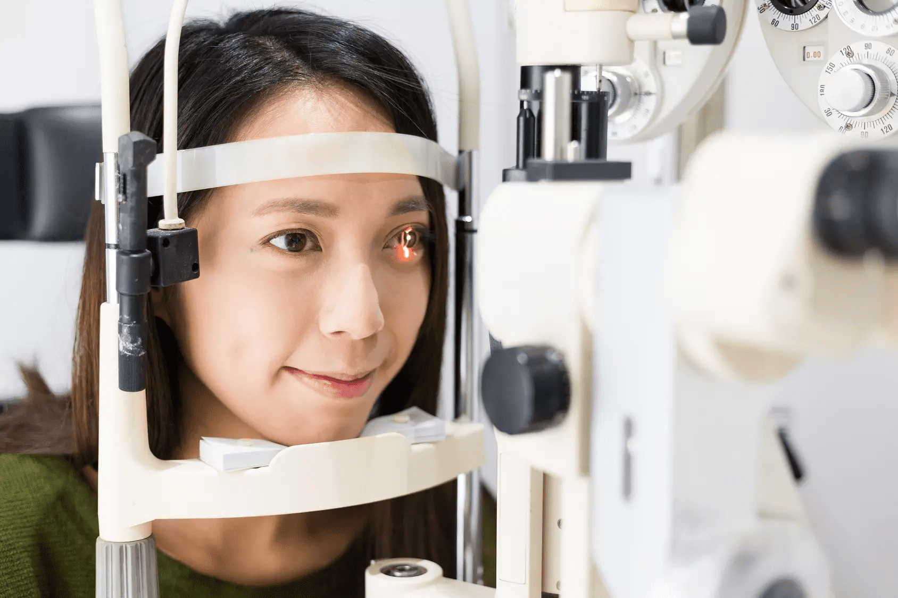

Здравейте доктор Ревалски. Сега ще говорим за това как да поддържаме ясна визия и какви стъпки да предприемем, ако започне да се замъглява.
Здравейте! Благодаря ви много за възможността да споделим знания и да отговоря на всичките ви въпроси относно най-новите постижения в офталмологията.
Д-р Ревалски, колко хора по света имат проблеми със зрението и кое заболяване обикновено ги причинява?
Много малко хора днес имат перфектно зрение. Според Световната здравна организация (СЗО) 2 милиарда души имат проблеми със зрението. Половината от тях са причинени от лична небрежност и лоша грижа за очите.
Сериозният проблем започва с обикновено замъглено зрение. Ако пренебрегнете това, болестта може впоследствие да се развие според един от трите сценария - катаракта, глаукома или дистрофия на централните части на ретината. Катаракта е частично или пълно замъгляване на лещата, което ви кара да виждате като в мъгла. При дистрофия на ретината централното и цветното зрение намалява. А при глаукома зрението се губи безвъзвратно – не може да се възстанови, защото централният зрителен нерв умира.
Оказва се, че глаукомата е най-сериозното заболяване от трите. Как може да се обясни това?
Когато зрението ви започне да се замъглява, дори няма да подозирате глаукома. В ранните етапи е много трудно да се диагностицира, тъй като заболяването може да протича безсимптомно и пациентът не изпитва никакъв дискомфорт. Глаукомата често се открива само когато едното око е сляпо, а другото е замъглено. Глаукомата е най-честата форма на очно заболяване днес. На второ място са катаракта и дистрофия на ретината, които също представляват голяма опасност за зрението.

Защо зрението дори на младите хора се влошава?
Има много възможни причини. Известно е, че нашето здраве отчасти зависи от генетиката, но в повечето случаи основната причина за проблеми със зрението е нашият начин на живот – лоши навици, работа при слаба светлина, липса на витамини, носене на контактни лещи и т.н.
Какъв вид лечение обикновено се прилага днес?
Има три вида лечение: консервативно (медикаментозно), хирургично и лазерно. Видът на лечението, който ще се използва, зависи от състоянието. Глаукомата може да се лекува чрез понижаване на вътреочното налягане, подобряване на кръвообращението и нормализиране на метаболизма на очните тъкани.
Това означава ли, че може да се излекува без операция и лазерна корекция?
Хората с късогледство и далекогледство, които започват да замъгляват зрението си, могат да спрат и премахнат този процес с помощта на натурални препарати. Благодарение на специалната комбинация от активни вещества е възможно не само да се предотврати развитието на сериозни заболявания като дистрофия, катаракта и глаукома, но дори да се възстанови зрителната острота на 100%.
Моля, разкажете ни повече за това, доктор Ревалски.
Говоря за уникални пептидни биорегулатори за очната тъкан. Те имат способността да укрепват ретината с 50-90% и да възстановяват предишното здраве на цялото око. Те са изградени от къси вериги от аминокиселини и действат като регулатор на клетъчно ниво.
Къде мога да взема такъв продукт?
Един от най-популярните пептидни продукти с висока концентрация, който препоръчвам на всички мои пациенти е . Той укрепва структурата на клетките в ретината и кръвоносните съдове, възстановява протеиновата биосинтеза до нормално състояние и помага за регулиране на експресията на генома. Веднъж попаднали в тялото, тези капсули изпращат специален сигнал до ДНК. Информацията, получена от клетките, задейства инициирането на протеиновия лечебен процес, стабилизирането на капилярите и връщането на зрението към нормалното.
Това означава ли, че всички хора с проблеми със зрението могат да бъдат излекувани?
Най-често да. Тествахме капсули върху пациенти с проблеми с ретината и роговицата.
Всички тези хора имаха проблеми със зрението, дистрофични процеси, дисфункция на кръвоносните съдове в очните ябълки. При някои от тях болестта постепенно се разпространява в други части на окото. При стартиране на 98% от пациентите са имали благоприятен ефект, независимо от това какво заболяване са имали и колко тежко е било то. Също така, това средство помага при късогледство и далекогледство.
Какъв е резултатът от вашите пациенти?
Когато предписвам на моите пациенти, абсолютно всички, включително и тези с далекогледство или късогледство, казват, че след лечение зрението им се подобрява значително.
Беше забелязано също, че техният блефароспазъм, фотофобия, сълзене изчезнаха. След пълния курс на лечение с се наблюдава уголемяване на периферното зрение, а слепите петна на зрението намаляват и понякога напълно изчезват.

Какви очни заболявания лекува това средство?
Продуктът има широк спектър на действие. Това означава, че капсулите имат комплексно лечебно действие и затова могат да лекуват много очни заболявания, вкл. укрепва очните мускули. Само след един курс на лечение ще забележите значителни подобрения:
- Раздразнението, възпалението и умората на очите ще изчезнат;
- Синдромът на сухото око също ще изчезне;
- Вътреочното налягане ще се върне към нормалното;
- Яснотата на зрението ще се увеличи;
- Очите ви ще бъдат защитени от различни заболявания.
Има ли хора, за които този продукт е противопоказан?
се състои изцяло от естествени съставки, свързани с нашето тяло. Поради това капсулите не предизвикват имунна реакция, те са абсолютно безопасни за хора с хронични заболявания и дори страдащи от алергии. Важно е също продуктът да няма странични ефекти и да не предизвиква пристрастяване.
За съжаление, това средство не може да се намери в аптеките. Тъй като е много ефективен, аптечните вериги се съгласяват да вземат продукта за продажба само ако цената е значително завишена с 3-5 пъти. Факт е, че продажбата на тези капсули ще "" удари "" техните печалби, така както и други по-малко ефективни продукти за здравето на очите просто ще спрат да купуват! Но това е напълно неизгодно за купувачите - обикновените хора не трябва да страдат заради чужд бизнес. Всеки трябва да може да получи ефективно лечение на достъпна цена. Затова препоръчвам само да купувате директно от производителя онлайн. Доставката на продукта се извършва с куриер до всяка точка България, при закупуване на пълен курс няма да се налага да плащате нищо допълнително.
Благодаря за информативното интервю! Сигурен съм, че много българи са получили ценни знания благодарение на вас и ще могат да възстановят здравето на очите си.
Благодаря за поканата! Надявам се, че съм отговорил на всички важни въпроси по прост и разбираем начин, дори и за хора без медицинско образование.